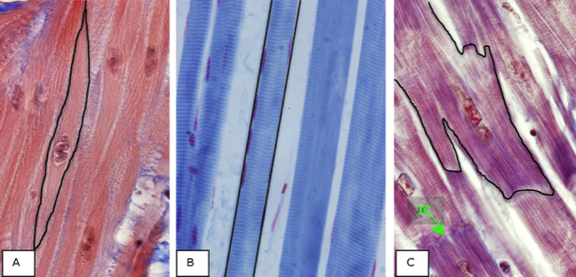

B) Bepaal de vorm van de spiercel:
- De vorm van de spiercel kan je het gemakkelijkste bepalen op een overlangse doorsnede. Denk wel steeds aan de 3D structuur !

Overlangse doorsneden van spierweefsel waarin je telkens de vorm van de spiercellen goed kan waarnemen.
(A) Glad spierweefsel. Gladde spiercellen hebben een spoelvorm. De cellen zijn in het centraal gebied breed en spits aan de uiteinden.
(B) Dwarsgestreept skeletspierweefsel. Skeletspiercellen zijn cilindervormig, wat betekent dat ze op een perfecte overlangse doorsnede 2 zijden hebben die nagenoeg evenwijdig met elkaar verlopen.
(C) Hartspierweefsel opgebouwd uit hartspiercellen die vertakt zijn. De uiteinden van de cellen zitten in de lengterichting aan elkaar vast met intercalaire schijven (IC).
(A) Glad spierweefsel. Gladde spiercellen hebben een spoelvorm. De cellen zijn in het centraal gebied breed en spits aan de uiteinden.
(B) Dwarsgestreept skeletspierweefsel. Skeletspiercellen zijn cilindervormig, wat betekent dat ze op een perfecte overlangse doorsnede 2 zijden hebben die nagenoeg evenwijdig met elkaar verlopen.
(C) Hartspierweefsel opgebouwd uit hartspiercellen die vertakt zijn. De uiteinden van de cellen zitten in de lengterichting aan elkaar vast met intercalaire schijven (IC).
Vordering zelfstudie spierweefsel: